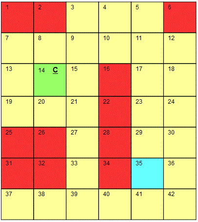
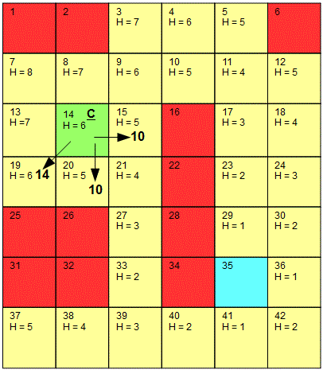
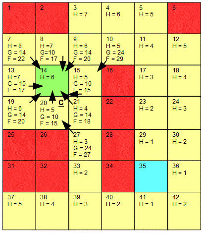

<div id="jsn-maincontent" class="span9 order1  row-fluid">
					<div id="jsn-maincontent_inner">
						<div id="jsn-centercol"><div id="jsn-centercol_inner">
									<div id="jsn-mainbody-content" class=" jsn-hasmainbody">
								<div id="jsn-mainbody-content-inner1"><div id="jsn-mainbody-content-inner2"><div id="jsn-mainbody-content-inner3"><div id="jsn-mainbody-content-inner4" class="row-fluid">
								
										
								
								<div id="jsn-mainbody-content-inner" class="span12 order1 ">
		
										<div id="jsn-mainbody">
										<div id="system-message-container">
	</div>

										<div class="item-page" itemscope itemtype="https://schema.org/Article">
	<meta itemprop="inLanguage" content="en-GB" >
	
		
						
		
	
	
		
								<div itemprop="articleBody">
		<p></p>
<h1 style="text-align: center;">Shortest path algorithm -&nbsp;A* algorithm</h1>
<p><strong>Introduction</strong><br>The A* algorithm is an algorithm to find the shortest path between two points. It has many important applications, not least of which is in gaming, to control how characters and other objects move in an environment. It can seem quite complex to begin with but once you have the basic idea, it is very mechanical.</p>
 
<p>Consider a grid. This might represent a landscape in a computer game, for example, with mountains, streams, marshes, buildings and other objects. We have a character in the game and the character has a start position and what we want to work out using our A* algorithm is what the shortest route to the finish cell is. We will colour the starting cell green and the finishing cell blue. We will also call the current cell we are working with at any moment in time C. Each cell will be numbered so we can reference them indiviually. There are some cells in the grid which could be locked buildings in a game, for example. Our character is not allowed to cross these so we will colour them in red.</p>
<p></p>
<p>To help us, we need to keep two lists and three piece of information about each cell in the grid. These are:</p>
<p><strong style="line-height: 1.5;">Open list<br></strong>This is a list of the cells that we need to check. This list will grow and shrink as we work our way through each cell.</p>
<p><strong>Closed list</strong><br>This is a list of the cells that have been checked. This list will grow and represents the cells that we don't need to check anymore.</p>
<p><strong>Nodes</strong><br>Each node will have 3 pieces of data:</p>
<p>H value (the heuristic value)<br>G value (the movement cost)<br>F value (G + H)</p>
<p><strong>Parents</strong><br>Every node will usually have at least one parent. This is the node that you have to come from to get to the current node you are working on.</p>
<p><strong>Calculating the H value</strong><br>This is the distance from a node to the target node. There are a number of ways that you can do this. One way is called the 'Manhattan method', which simply means you count vertically and horizontally (like the grid pattern of roads and buildings in New York). We don't go diagonally. For example:</p>
<p>&nbsp; &nbsp; from cell 23 to 35 is 2<br>&nbsp; &nbsp; from 12 to 35 is 1 across and 4 down, a total of 5<br>&nbsp; &nbsp; from cell 20 to 35 is 3 along and 2 down, a total of 5.</p>
<p>Notice that we just count through the red blocks.&nbsp;Because our grid is a fixed, unchanging size, we can calculate our heuristic value for every cell straight away. We don't need to calculate these for the red blocks or the final one, just the other ones.</p>
<p><strong>Calculating the G value</strong><br>This is the value that you decide to give when travelling from one cell to another. Again, there are different ways to do calculate this but we will say that to go to another cell that is horizontal or vertical to the one we are at will cost us 10. To go diagonally will cost us 14 approximately (using Pythagoras - a triangle that has two sides equal to 10 means that the third side, is the root of 10 squared plus 10 squared, or the root of 200, or about 14). Our grid looks like this, and you can see the 'cost' of moving to an adjacent cell.</p>
<p></p>
<p>Each cell usually has at least one parent (unless it is an island). A parent is the cell that you have to come from to move to that cell. You can move to a cell from a horizontal or a vertical or a diagonal adjacent cell, but not one that is red. Our current node is cell 14. None of the nodes that surround this node is in either our open list or our closed list. We will add the cell we are checking, cell 14, to our closed list and the parent cells (also called nodes) to our open list. We now have this:</p>
<p></p>
<p>Open list = 14<br>Closed list = 7, 8, 9, 13, 15, 19, 20, 21</p>
<p>The arrows show the parents of the cell we are currently working on, cell 14. Now we have to calculate the movement cost of going from the parent to the cell we are currently on. Remember, it is 10 for horizontal and vertical movements and 14 for diagonal ones. Once the G values have been calcualted, the F values can also be done, as you just add up the H and G value for each parent. You can see the values below.</p>
<p></p>
<p>Now we have to select the next cell we are going to examine. We always use the lowest F value. If more than one cell has the same lowest F value score, we can pick any one of them. We'll pick cell 15, which has an F value of 15. Cell 15 becomes our current cell. We remove it from the open list and add it to the closed list. We now have to calculate the G, H and F values for any cells we haven't considered yet, and then we need to look at the cells around it, as we did before.</p>
<p>Let's do the easy bit first!&nbsp;Cell 10 is a parent of cell 15. It will have a movement cost of 14, which we now have to add to the G value of cell 15, which is 10. the total G value of cell 10 is therefore 24. The F value is 24 + 5 = 29.</p>
<p>Now we have to look at the other parents of the current cell. Cell 14 is on our closed list, so we don't need to look at that one.</p>
<p>Cell 8 is on our open list so we need to check that one in a special way. We have to ask if it is quicker to go from cell 15 to cell 8 compared to going from cell 14 to cell 8. The G value of cell 15 is 10, and we have to add the movement cost to go to cell 8, which is 14, giving a total of 24. This is not less than the G value of cell 8 so we leave cell 8 completely alone. If it was less, we would have to re-parent node 8 by pointing it to node 15 rather than having it pointing at 14.</p>
<p>Cell 9 is on our open list. The G value in cell 15 is 10. Add the movement cost of 10 to give a total of 20. 20 is not less than 14 so we leave cell 9 alone. The G values (plus the extra movement costs) for cells 20 and 21 (both on our open list) are also higher than the current cells' G values so on this occasion, no re-parenting needed to take place.</p>
<p><span style="line-height: 16.3636360168457px;"><br></span></p>
<p><span style="line-height: 16.3636360168457px;">Open list = 14, 15</span><br style="line-height: 16.3636360168457px;" ><span style="line-height: 16.3636360168457px;">Closed list = 7, 8, 9, 13, 19, 20, 21</span></p>
<p><span style="line-height: 1.5;"></span><span style="line-height: 16.3636360168457px;">Now we have to select the next cell we are going to examine. We always use the lowest F value. We must pick cell 20, which has an F value of 15. Cell 15 becomes our current cell. We remove it from the open list and add it to the closed list. We now have to calculate the G, H and F values for any cells we haven't considered yet, and then we need to look at the cells around it, as we did before.</span></p>
<p>Cell 27 has a G value of 14 plus the 10 from cell 20, giving a total of 24, and an F value of 27. To go to cells 13, 15, 19 and 21 would involve higher G values, so no re-parenting is required.</p>
<p></p>
<p><span style="line-height: 16.3636360168457px;">Open list = 14, 15, 20<br></span><span style="line-height: 16.3636360168457px;">Closed list = 7, 8, 9, 13, 19, 21</span>&nbsp;</p>
<p><span style="line-height: 16.3636360168457px;">Now we have to select the next cell we are going to examine. We always use the lowest F value. We must pick either cell 8 or 13, which has an F value of 17. we will select Cell 8, which becomes our current cell. We remove it from the open list and add it to the closed list. We now have to calculate the G, H and F values for any cells we haven't considered yet, and then we need to look at the cells around it, as we did before.</span></p>
<p><span style="line-height: 16.3636360168457px;">We continue this process until we get to a position where the current node is next to the finish node (in blue). At that point, the blue cell becomes the parent of the current node and we simply have to trace back all of the parents to the start node to find the shortest path. In our example, this would first happen when we got to cell 40 and we would find that the shortest path as given by tracing back the parents is as shown below:</span></p>
<p></p>
<p></p>	</div>

	
							</div>

									</div>
				
							</div>
							
				        							
							
							</div></div></div></div></div>			
							
							
		        				</div></div> 
				</div></div>